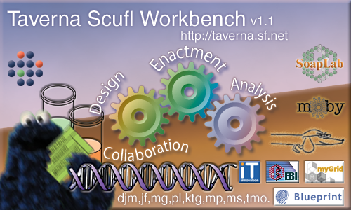
Credits - This document written by tmo, ktg, jf, nm, pa, poked at and prodded by many others.
The Taverna Workbench allows users to construct complex analysis workflows from components located on both remote and local machines, run these workflows on their own data and visualize the results. To support this core functionality it also allows various operations on the components themselves such as discovery and description and the selection of personalized libraries of components previously discovered to be useful to a particular application.
Throughout this document various specialized terms will be used, unless otherwise stated the sense intended is as follows:
Taverna, as with all new technologies, has a certain 'activation barrier' before it becomes truly useful in terms of time invested from the user's perspective. In order to lower this we present some possible reasons why workflow technologies might save time and effort in the long run:
This section will walk through the process of installing and configuring Taverna then creating and enacting a trivial sequence fetcher workflow. While this is obviously a task which could (and arguably should) be performed in a simpler fashion it should serve as a reasonable introduction to the basic features of Taverna. This section assumes that you are running on some modern version of the Windows operating system (Windows 2000, Windows XP), there may be some minor differences with other systems such as linux and Solaris although the basics should be identical.
Both Windows and Linux installations require a modern (version 1.4) Java installation to run. Windows machines will not have this by default, you will need to obtain it from http://java.sun.com. Linux users are more likely to already have this but should check - the procedure for Java installation on Linux is out of the bounds of this document.
On Windows machines installation should be extremely simple - open the downloaded archive (you probably already did this to read this file!) and unpack it to somewhere on your file system. The precise location doesn't matter but Taverna will not run from within a compressed folder - if you are using Windows XP and have not installed any software such as WinZip then Windows will appear to open the zip file just as if it were a normal folder on the file system, however, this is not the case and the differences will cause Taverna to fail.
Linux installation is very slightly more complex as you will have to install one extra piece of software first. Taverna makes use of the 'dot' application from the GraphViz package from AT&T research. This package (which is well worth installing for other reasons) is available as an RPM from the AT&T site here: http://www.research.att.com/sw/tools/graphviz/download.html. You may already have it, a simple check is to go to a command line and try typing 'dot', if the terminal just sits there then you probably have GraphViz already, if it shows an error indicating that the application is not found then you'll need to install it. Installation of the RPM will almost certainly require root access so you may need to ask your systems administrator to install it for you.
Once you have GraphViz installed then you can simply unzip the Taverna archive to somewhere sensible, you might also want to sym-link to the runme.sh file from e.g. /usr/bin/taverna for ease of access.
The basic configuration for the workbench is held in the file 'mygrid.properties' inside the 'conf' folder of your unzipped installation. For the majority of users the default settings will work just fine, but there are a few exceptions - check whether these apply to your installation and adapt the properties appropriately. For Windows users you'll want to edit this file in WordPad rather than NotePad - it uses UNIX style line endings so NotePad will get all the lines mixed up, WordPad handles this just fine. Linux users can use Emacs or your favorite text editor. Sections in blue boxes below are excepts from the configuration file.
If you are behind an HTTP proxy, and there's a reasonable chance that you are, you'll need to locate the section in mygrid.properties relating to proxy settings. There are instructions above these parameters - if you are unsure of what values to use here then you'll have to ask your systems administrator. The values here will be the same as those used in your normal web browser; Taverna currently doesn't support configuration using a proxy.pac style mechanism but you should be able to find the individual parameters required without too much difficulty.
# PROXY CONFIGURATION (user editable) #-------------------------------------------------------------------- # Use the properties below if your machine accesses the internet # via a proxy server. Uncomment them by removing the leading '#' # and then modify to suit your installation. # # Some configurations appear to need to edit the http.* versions. #-------------------------------------------------------------------- # Configuration for Nottingham CS # proxySet = true # proxyHost = 128.243.220.41 # proxyPort = 3128 # # http.proxyHost = 128.243.220.41 # http.proxyPort = 3128 #-------------------------------------------------------------------- # The http.nonProxyHosts property defines a set of host name or IP # address patterns for which the proxy should not be used. For example, # it would make sense for the local host to be included in this, # either by name (localhost) or IP (127.0.0.1). Host patterns in this # list are separated with the '|' character as shown below. #-------------------------------------------------------------------- # http.nonProxyHosts = localhost|127.0.0.1|*.mydomain.com #--------------------------------------------------------------------
By default Taverna uses a single master window into which components are placed as child windows. I personally prefer this interface but if you would rather have all windows created as top level windows in themselves (so having their own icons in a task bar etc) then you can comment out the 'taverna.workbench.useinternalframes' property by placing a '#' at the start of the line. This might be worth playing with to see which you prefer.
# WORKBENCH WINDOW SYSTEM (user editable) #-------------------------------------------------------------------- # By default the Taverna Workbench uses a large frame with components # appearing in subwindows within that frame. By commenting out the # property below you can change this behavior to use the native # windowing system for all component windows. The Standard workbench # window will still appear, and closing it will end your session, but # the child windows will appear on your normal desktop. Any value # here will force the use of internal frames, if you don't want them # then don't set this to anything - comment it out. #-------------------------------------------------------------------- taverna.workbench.useinternalframes = true #--------------------------------------------------------------------
Taverna can be configured to automatically load libraries of components into the service selection panel when it start up. This is worth looking into if you are, for example, running a course which involves Taverna and you want your students to see your sample services when the workbench starts up. For now I suggest leaving the values as specified, although as they contact the network to find additional information on startup commenting out these sections might speed up the load times.
# DEFAULT SERVICES (user editable) #-------------------------------------------------------------------- # The service selection panel component can be populated with extra # web services and soaplab installations using this configuration # section. In order to enable this, uncomment and edit the two # properties to suit. # Note that the default services load in a new thread, so may not # appear immediately within the service panel. If any errors occur # during the load, the stack trace is displayed in the system # console. This is not ideal, we'll have better reporting in the # next release. # Multiple instances of each (soaplab or wsdl) may be specified by # including all endpoints, separated with the ',' character as shown # below. # Trailing whitespace is not allowed in these URLs! If you're having # problems getting this to work then check there isn't a space at the # end of the line. #-------------------------------------------------------------------- taverna.defaultsoaplab = \ http://industry.ebi.ac.uk/soap/soaplab,\ http://www.ebi.ac.uk/collab/mygrid/service4/soap/services taverna.defaultwsdl = \ http://www.ebi.ac.uk/collab/mygrid/service1/goviz/GoViz.jws?wsdl,\ http://www.ebi.ac.uk/xembl/XEMBL.wsdl taverna.defaultbiomoby = \ http://mobycentral.cbr.nrc.ca/cgi-bin/MOBY05/mobycentral.pl taverna.defaultweb = \ http://www.ebi.ac.uk/~tmo/workflows/ #--------------------------------------------------------------------
There are reports of some linux installations showing a mysterious error '4'. This is, as far as we can tell, a problem with java handling PNG format images - we use this for the workflow diagram. If you are having this problem you might like to try uncommenting one of the 'taverna.scufldiagram.imagetype' lines to use GIF or JPEG coding instead. This seems to be a problem particularly on Linux but this is worth trying on any installation showing this error.
Note - as of version 1.1 and higher this problem should never appear, Taverna will detect the issue the first time and fix it behind the scenes without any further intervention. If this is not the case please let us know!
# WORKFLOW DIAGRAM IMAGE TYPE (user editable) #-------------------------------------------------------------------- # By default the workflow diagram uses an internal image in PNG # format. Some platforms (win2000 and linux) have exhibited problems # with this which seem to be rectified by changing the format to one # of 'gif' or 'jpg' # If you're seeing messages with the extremely helpful text of '4' or # similar and no diagram appearing in the workbench you might like to # try uncommenting one of the options below #-------------------------------------------------------------------- # taverna.scufldiagram.imagetype = gif # taverna.scufldiagram.imagetype = jpg #--------------------------------------------------------------------
If you are running Taverna without administrative privileges on a unix style system you may be unable to install Graphviz as described above. You may, however, be able to install it into an alternative location. If this is the case you can define the property 'taverna.dotlocation' to the full path of the dot executable, Taverna will pick it up from this location rather than attempting to search the $PATH environment variable. This is only required if the diagrams don't work - Windows users should never need this option.
# WORKFLOW DIAGRAM DOT LOCATION (user editable) #-------------------------------------------------------------------- # By default Taverna will look for the 'dot' executable used to draw # the workflow diagram on the standard PATH (whatever that concept is # on your architecture of choice). To override this and explicitly # supply a path to the executable you should edit and uncomment the # following property #-------------------------------------------------------------------- # taverna.dotlocation = /bin/foo/mystuff/dot #--------------------------------------------------------------------
You should be able to run an installed Taverna system by invoking the 'runme.bat' or 'runme.sh' files, the former being for Windows and the latter for Linux. If this fails to work you should re-check the installation, Java version and GraphViz version (linux only), and carefully read through the section on configuration. If you have done this and the system still doesn't work please let us know via the mailing lists.
As a first quick demonstration of Taverna you can load one of the example workflows. Find the Advanced Model Explorer and click on the 'Load' icon in its toolbar. You should be presented with a file chooser dialog box, the exact appearance of which will be determined by your operating system.
Workflow examples are stored in the 'examples' subdirectory of your Taverna installation, so use the file browser to navigate to this directory and select the 'ShowGeneOntologyContext.xml' workflow. This should result in the Advanced Model Explorer and Workflow Diagram panels being populated with the workflow defined in this file. There may be a short delay while Taverna contacts the network to get more information about the resources the workflow uses - if the delay is a very long one followed by an error you probably need to check the configuration of your proxy settings, see the configuration section for more details.
Aside from creating and editing, the most useful thing to be able to do with a workflow is to run it. Go to the 'Tools and Workflow Invocation' menu in the top level toolbar, and select the 'Run Workflow' option at the end of the list. You should be presented with a new window - this is the place to enter the starting data, if any, on which the workflow is to run. In this case the workflow has a single input called 'termID', click on it to see some more information on what the workflow expects.
In this case, the workflow description has helpfully included an example of a sensible input value, the string 'GO:0007601' (this term corresponds to 'vision' in the Gene Ontology - http://www.geneontology.org). As you have just selected the 'termID' input you should notice that the 'New Input' and 'New List' options are now available at the top of the window, click on the 'New Input' to create a single data input to the workflow. In panel that has just appeared you should replace the 'Some input data goes here' with the input term, so try entering 'GO:0007601' as the description suggests (but without the quote marks). Once you have entered this input data you can press the 'Run Workflow' button at the bottom of this window to actually start the workflow engine off on the supplied input.
A new window should appear with the title 'Enactor invocation'. This window shows you the progress of the workflow and also the results on completion. Additionally, if anything goes wrong with the enactment you can interrogate other parts of this display to find out exactly what has happened (but we won't cover this here). You should see a table appear initially containing a list of the component operations along with their status, this will update until the workflow has finished and you can inspect the inputs and outputs of any given part of the workflow by selecting the process you're interested in and viewing the intermediate values from the bottom half of the window. Once the workflow completes you'll be jumped into the results view.
This particular workflow has a single output called 'graphical', which contains a single piece of data. Select the only available item in the list on the left hand side of the window and you should see a diagram of a sub graph of the Gene Ontology appear in the right hand panel - this is your workflow result (the diagram can be quite large, you might have to scroll around to see it). Congratulations, if this worked then you have installed and configured Taverna correctly and run your first workflow.
If you were to want to save the workflow (there's not much point as we haven't changed anything) you would select the 'Save' option from the Advanced Model Explorer and save the document in the usual fashion for your operating system. You probably don't want to do this for now as there are no changes.
To finish, and prepare for the next part of the introduction, you'll want to reset the workflow. Click on the red 'Reset' icon and confirm that you do really want to reset the workflow. This just resets the definition, your results from the workflow invocation are still there; you can release these by simply closing the Enactor invocation window.
First things first - the workflow needs to have an input, in this case the id of a sequence to fetch. You can create a new workflow input by right clicking on the 'Workflow inputs' node in the Advanced Model Explorer and selecting 'Create new input'. This will then ask you for a name for the input, you can change this later but for now use 'sequenceID'. Click on 'OK' and you should see your new input appear in the Advanced Model Explorer and Workflow Diagram windows.
Similarly, the workflow will need an output. Follow an equivalent process but this time clicking on the 'Workflow outputs' node and using the name 'sequence' to create an output. Again, you should see the output appear in the two windows.
Now that the workflow has an input and output it needs something to fit between to actually do the work. If you're familiar with the EMBOSS tool suite you might be aware that there's a program called 'seqret' which can do exactly this, fetch a sequence from an ID. Fortunately the default services available from Taverna include a system called Soaplab at the EBI which contains all EMBOSS tools, including seqret. Go to the 'Available Services' window and either scroll down until you find it or, more sensibly, enter 'seqret' into the search box at the top and hit return. You should see the tree narrow to show you two matching operations, 'seqretsplit' and 'seqret'.
To add the operation to the workflow you can drag the 'seqret' service from the 'Available Services' window into the 'Advanced Model Explorer' window, dropping the service into the empty space on the right of this window. You should hopefully see a new entry under the 'Processors' node called 'seqret' with an array of other child items hanging off it - these are the available inputs and outputs to and from the newly created process.
You should see the workflow input, processor and workflow output in the 'Workflow Diagram' window, but they're not linked together yet. To link them, you need to right click on the 'sequenceID' node in the 'Advanced Model Explorer' and select the 'seqret' child menu (under the 'Link sequenceID to...' item). This child menu will show you all the inputs in the seqret tool to which you can link your workflow input. The exact details of all these inputs will depend on the processor, in this case you want to link the sequenceID workflow input to the 'sequence_usa' processor input. Select the 'sequence_usa' from the child menu and you should see the link appear in the workflow diagram.
The remaining link in the workflow is from the output of the processor to the workflow output. Conceptually we always link from the source of the information to its destination, so you'll need to expand the 'seqret' node in the Advanced Model Explorer (if it isn't already expanded) and scroll down to see the available outputs, denoted by purple circles with outgoing arrows. There are two outputs from this processor, 'report' and 'outseq', the one we want to use is the 'outseq'. Similarly to the first link, right click on the 'outseq' node and follow the 'Workflow outputs' child menu. There is only one workflow output so select it and you should observe the now completed workflow in the 'Workflow Diagram' window.
You can add descriptive information to the workflow inputs - this information is useful to guide potential users of your new workflow. Select the 'sequenceID' node by left clicking on it in the 'Advanced Model Explorer'. You should observe a tab at the top of the window with a purple icon and the text 'Metadata for 'sequenceID''. Select this tab by clicking on it.
This is the metadata editor. For now we're only going to look at the free text description, the ontology and mime type tabs are too complex for this introduction. Select the 'Description' tab, enter some description of the input (i.e. a quick paragraph explaining that this input should hold the sequence ID to fetch and perhaps an example value - 'swallid:ops2_*' is a reasonable one), click the 'Update' button when you're done and jump back to the 'Workflow' tab to get back to the default view of the workflow.
You should now be able to run the workflow just as in the previous section, try entering your example 'swallid:ops2_*' as the input (without the quotes) and you should see the status display (briefly) followed by the results which, all being well, should contain the fetched sequences in fasta format. If this worked then great, you've created a simple workflow from scratch and enacted it.
The Advanced Model Explorer (AME) is the primary editing component within Taverna. Through it you can load, save and edit any property of a workflow. As a result of this it is quite complex, this section will explain in detail exactly how to use each of its functions.
The toolbar for the AME consists of six items:
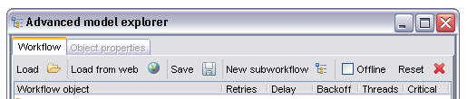
The 'Load' and 'Load from web' buttons are reasonably self explanatory. When selected they present the user with either a file dialogue (in the first case) or a text input where the user can enter a URL. The file or URL specified should be a workflow definition in XScufl format. Workflows are loaded alongside any existing content, if a clean load is desired the reset function should be activated prior to any load operation.
'Save' allows the user to write the current workflow to disk in XML XScufl format - this definition can then be loaded at a later date using the 'Load' function described above. A standard save dialogue is shown, the appearance of which is platform dependent.
'New subworkflow' creates a blank child workflow within the primary workflow for this instance of the AME. The child workflow appears in the processor list as normal but has neither inputs nor outputs.
'Offline' - this option allows the workflow to be set to offline mode. In offline mode Taverna attempts a 'best efforts' at all operations without requiring network connectivity to the workflow's resources. This can be useful for dealing with workflows where some processors do not load due to the underlying service no longer existing as well as the more obvious case of working on the train, at conferences etc where some display functionality is required without the network being connected. For obvious reasons it is generally impossible to actually enact a workflow in offline mode, and processors will only appear to have inputs and outputs which are explicitly referenced (i.e. have a data connection to another output or input) as the normal behavior of fetching port information from the network is disabled. If a workflow is loaded in offline mode and the checkbox is cleared the entire workflow is reloaded in online mode - if this fails for some reason offline mode is reasserted and the workflow reloaded in offline mode again.
'Reset' clears the entire workflow definition, requiring an additional confirmation from the user before doing so. All entities in the workflow including descriptions and metadata are reset to their initial blank states. This does not effect the service panel, only the state of the current workflow.
The main section of the AME shows a tabular view of the entities within the workflow. This includes all processors, workflow inputs and outputs, data connections and coordination links. Some items may be expanded to show properties of child items such as alternate processors and input and output ports on individual processors. In general the right click menu on an entity will expose at least 'delete from workflow' functionality and may provide more.
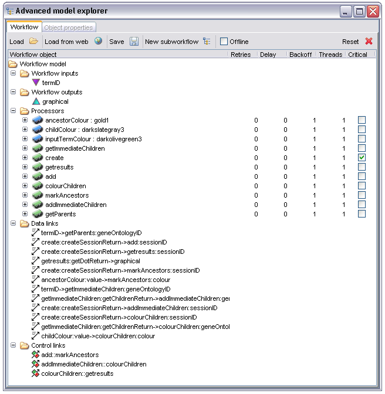
By selecting the 'Workflow model' node in the AME a new tab 'Workflow metadata' becomes available:
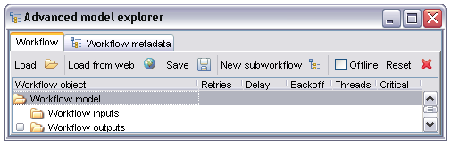
Selecting this tab shows the workflow metadata display:
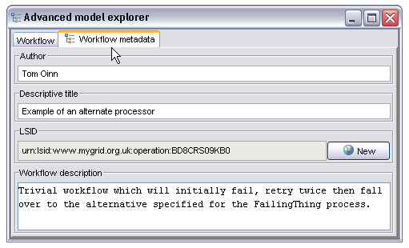
This panel allows the user to enter an author name, descriptive title and longer textual description. The Life Science Identifier (LSID) field is not manually editable, instead the 'New' button will connect to whatever LSID authority is configured in the mygrid.properties file and ask for a new LSID suitable for a workflow definition. This then provides a globally unique identifier for the workflow definition (as opposed to workflow instance, each instance of a workflow within the enactor also has a unique ID but this isn't it). The original AME view can be restored by selecting the 'Workflow' tab.
The 'Workflow inputs' and 'Workflow outputs' nodes are used to create, respectively, workflow inputs and outputs. A new input or output can be created by right clicking on the text and selecting 'Create new input...' or the obvious corresponding option for outputs. This then displays a text dialogue into which the name of the new workflow input our output should be entered. Once created the name can be edited by double clicking on the name and editing in the normal way.
Once a workflow input or output has been created it can be further specified by selecting the input or output node in the tree and opening the newly available tab, 'Metadata for [input or output name]'. This tab has three sub-tabs for different parts of the input description. The first of these allows the user to select a term from an ontology (this is in a fairly early stage at present) which describes the data type for this port. The example below shows a port being annotated with information specifying that it is of type 'Gene ontology Term ID':
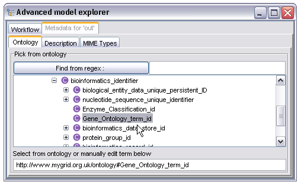
Additional tabs allow entry of a free text description (for workflow inputs this is shown in the workflow launch panel so is a good place to put information which users of the workflow would need to populate the inputs) and tagging of the input or output with MIME types. The latter is particularly important for workflow outputs as it drives the selection of renderers within the result browser. The description panel is self explanatory, the MIME type entry is shown below :
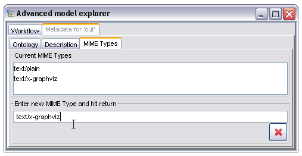
The large button at the bottom right of the panel will completely clear the MIME type list. Outputs and inputs in Taverna can have multiple MIME types - these are regarded as hints to the rendering system rather than being proscriptive computer science style formal types. To add a new MIME type the user enters the type into the text box and hits the return key, it then appears in the type list.
Workflow inputs may be linked to the inputs of processors within the workflow (or directly to workflow outputs) by right clicking on the particular workflow input and selecting the target from the drop down menu, either selecting a workflow output directly or selecting a processor then the workflow input within that processor. Conceptually links in Taverna always link from an output to an input, this is slightly confusing in the sense that workflow inputs are, as far as the workflow itself is concerned, outputs - they produce data. In a similar vein workflow outputs are in fact inputs, they consume data and manifest it to the outside world in the form of workflow results. The image below shows a workflow input being linked to the input of a processor:
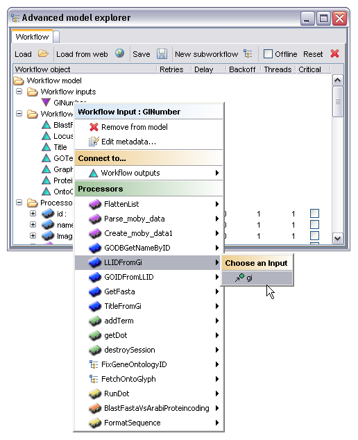
The following is a list of the MIME types currently recognized by renderers in Taverna's result browser, this list is useful to know when annotating workflow outputs for obvious reasons which is why it appears here rather than elsewhere.
text/plain=Plain Text text/xml=XML Text text/html=HTML Text text/rtf=Rich Text Format text/x-graphviz=Graphviz Dot File image/png=PNG Image image/jpeg=JPEG Image image/gif=GIF Image application/zip=Zip File chemical/x-swissprot=SWISSPROT Flat File chemical/x-embl-dl-nucleotide=EMBL Flat File chemical/x-ppd=PPD File chemical/seq-aa-genpept=Genpept Protein chemical/seq-na-genbank=Genbank Nucleotide chemical/x-pdb=Protein Data Bank Flat File chemical/x-mdl-molfile
At the present time the behavior for textual types is to render them either as plain text or as an XML tree for text/xml, a rendered graphical view for text/x-graphviz and Java's best attempt at rich text or HTML for the respective types. The various 'chemical/...' types are currently rendered using SeqVISTA, another project we integrated recently, this allows a very attractive view of sequence data in particular. The exception is the chemical/x-pdb which uses the new Jmol based renderer. All image types are rendered as images, which is pretty much what you'd expect.
MIME types are also used to attempt to guess the appropriate file extension when storing results to a file system tree, this is currently the only reason to tag an output as application/zip, Taverna has no other understanding of zip files.
The processors in Taverna are the primary components of the workflow. They are the entities responsible for both representing and ultimately invoking the tasks from which the workflow is comprised.In addition to allowing the manipulation of the individual processors this section also exposes a summary of all the remote resources used by the workflow, this can be shown by selecting the 'Processors' node and opening the 'Remote resource usage' tab that appears :
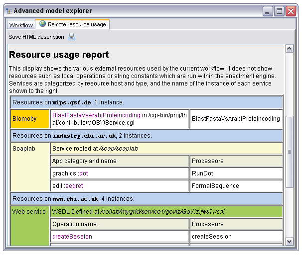
This display summarizes remote resources by host, giving a quick overview on which tools from which institutes the workflow uses. This report can be saved in HTML form and also includes the description, author, title and LSID if present defined in the workflow metadata. The intention is that between this and the workflow diagram much of the description you'd need for a paper or poster is auto generated.
Each processor in the workflow is represented by a processor node in the AME. These nodes can be expanded to show the inputs and outputs of that particular processor, selected to enable a tab containing metadata about the processor or double clicked on to edit the name of the processor.
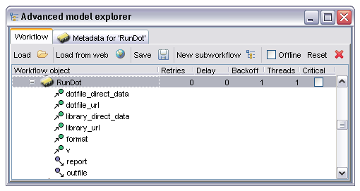
In this case the processor is one based on Soaplab (indicated by the yellow icon colour) and has six inputs and two outputs. The input and output names are shown as children of the processor, with different icons for inputs and outputs. Selecting the 'Metadata for 'RunDot'' tab shows the following information:
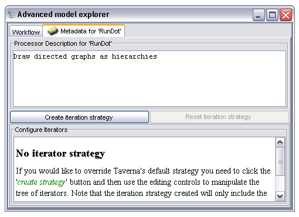
The metadata panel contains a free text description (which may or may not be populated from the service by default) and an editor for the iteration strategy. More details of the iteration system can be found in the iteration section, it will not be discussed further here. Return to the standard AME view by selecting the 'Workflow' tab.
Processors are instances of components available in the 'Available Services' panel, and are created from there. This also applies to alternates (see later in this section). See the Available Services section for more information.
The port nodes under each processor node are used to connect the outputs of processors either to the inputs of other processors or to workflow outputs. This is achieved by right clicking on the output port node and selecting either a workflow output (as shown in the case below) or by selecting a processor then the appropriate input within that processor.
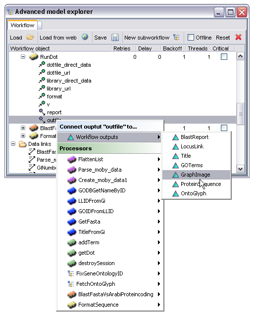
Some processor types may expose additional editors. For example, the processor type which emits a string constant has a very simple editor which allows the user to change the string it emits, the beanshell processor has a more sophisticated one providing a lightweight script editing environment and the nested workflow processor uses another instance of the AME as its editor. These editors, if available for the selected processor, are accessed from the right click menu on the processor node itself. The exact behavior depends on the processor type :
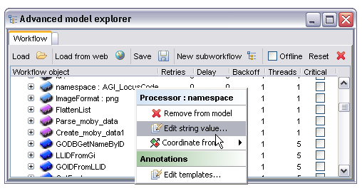
It is sometimes required to prevent a processor running until some condition is true. The most common (and in fact the only currently supported) condition is that processor A should only run when processor B has completed successfully. This constraint is created by right clicking on the processor node and selecting a target processor from the 'Coordinate from' menu. The semantics of this constraint are that the processor first selected will only start running once the processor selected from the menu has completed. It's worth noting that in the case where processor A is feeding data to processor B in some way this temporal condition is implicit, an explicit statement of the condition is only required where there is no other form of linkage between the processors. In the example below the processor 'GODBGetNameByID' will only run when the processor 'LLIDFromGi' has completed:
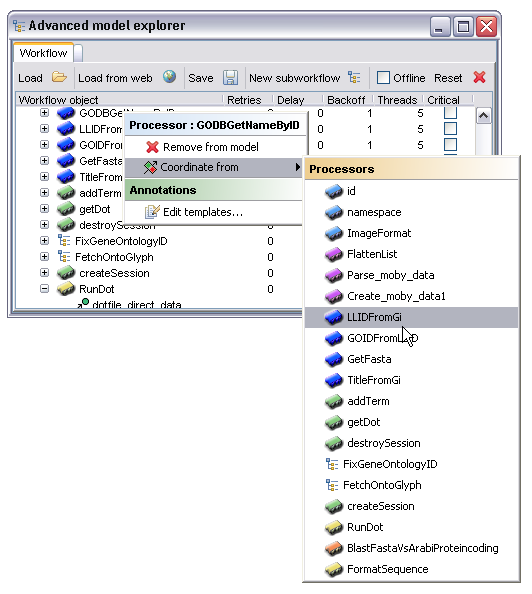
Each processor in the workflow has its own settings for fault tolerance. These settings include the ability to retry after failures and to fall back to an alternative or set of alternative processors when all retries have been exceeded. The state machine governing this process is shown below:
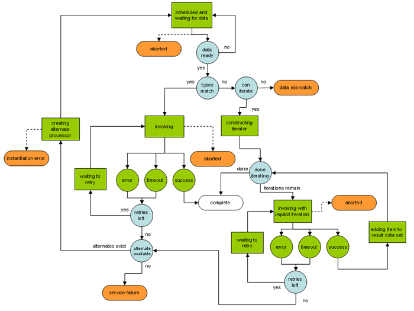
The main point to take from this diagram is that during an iteration individual iterations will be retried, but that if all retries are exhausted during any single iteration the entire process will be rescheduled with an alternate. So, if there are two hundred iterations and the last one fails the entire set of two hundred will be re-run on the first alternate, assuming there is one available.
Initial configuration of the retry behavior for each processor is done through the columns to the immediate right of the processor nodes in the AME main work area. By double clicking on these the user can change values for, from left to right, 'Retries', 'Delay' and 'Backoff'. These are the basic retry configuration options and have the following effects.
Retries - the number of times after the first attempted invocation that this processor should be run. So, if set to 1 there will be one retry after the first failed invocation.
Delay - the time delay in milliseconds between the first invocation failing and the second invocation attempting to run. Time delays can often be useful in cases where resources are less than optimally stable under heavy load, often in these cases simply waiting a second or two is enough to get a successful result.
Backoff - a factor determining how much the delay time increases for subsequent retries beyond the first. The time between attempt 'n' and 'n+1' is determined by multiplying the delay time by the backoff factor raised to the power of 'n-1'. So, if this value is set to 2 and the initial delay set to 1000 there will be a pause of one second between the first failure and the first retry, then should that in turn fail there would be a delay of 1000 x 21 = 2000 milliseconds or two seconds, the next would be four etc. Specifying a backoff factor reduces the load on heavily congested resources and is generally a good idea - the default value of 1 specifies no backoff, the delays will not increase between retries.
The 'Critical' checkbox determines what should happen if all retries and alternates have failed. If left unchecked the workflow will continue to run but processors 'downstream' of the failed processor will never be invoked, if checked then any failure here will abort the entire workflow.
The image below shows the user editing the delay factor for the processor 'FailingProcessor'. In this case the processor will retry twice after the initial failure, waiting first one second then two.
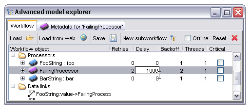
Once all retries have been used up without any successful invocation the processor concerned will fail, and either silently abort all downstream processors or abort the entire workflow, depending on whether the 'Critical' box is ticked. It is often possible, however, to have an alternative processor or list of processors which perform the same task, perhaps on a different server, and Taverna allows the user to explicitly state this in such a way that the alternate is used in place of the main processor when the latter has failed. To configure alternate processors the user expands the node for the main processor by clicking on the expand icon to the left of the processor icon. This then shows the inputs and outputs of the processor as before but also shows any defined alternates. An example of this display is shown below with the alternate fully expanded as well:
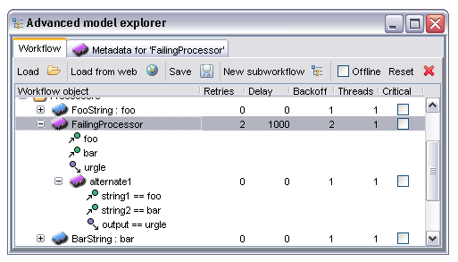
Note that the alternate has its own definable parameters for 'Retries', 'Delay' and 'Backoff'. The behavior here is that once the main processor has failed and exceeded all retries the alternate is scheduled in its place, using the alternate's parameters for fault tolerance features.
As alternate processors may well not have the same names for inputs and outputs it is often necessary to explicitly state that a particular port in the primary processor is equivalent to another in the alternate. This is done by selecting the port in the alternate and right clicking, then selecting the port in the primary processor for which this is an equivalent. In cases where the alternate processor has port names which match those in the primary Taverna will automatically create a default identity mapping.
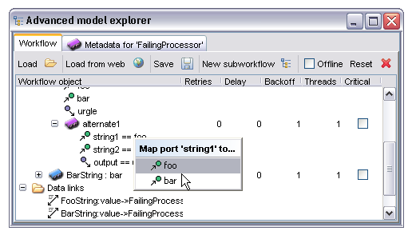
In this particular case the port with name 'string1' in the alternate is being mapped to the input port named 'foo' in the main processor.
Multiple alternates may be specified, if this is the case the order in which alternates will be used can be changed by right clicking on the alternate node and selecting 'Promote alternate' or 'Demote alternate' as appropriate. Alternates may also be removed from this menu:
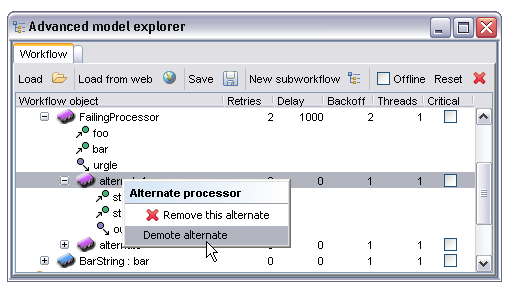
The 'Threads' property determines how many concurrent instances of the processor should be used during an iteration. This property only ever has any effect therefore if there is some kind of iteration occurring over the input data. To understand why you might want to change this property consider the following example.
Suppose there is a service which takes one second to run. On the face of it starting five instances of this service simultaneously will take exactly the same time as running five in series, assuming here that there is a single CPU backing the service. There is, however, another issue to consider; services invoked over a network link incur an additional time cost called latency - this is the time taken for the data to be transported to and from the service, the time to set up any network traffic etc. If we have this one second process but in addition half a second before and after to send the data clearly there will be a one second pause on the service end between iterations corresponding to the time to send the result back and for the enactor to send the next input data item. If, however, multiple threads run concurrently the enactor is sending data at the same time as the service is working on the previous input - the service in this case never has to wait for the next input item as it has already been sent while it was working on the previous one.
In the case of the service described above, running five iterations in series would take 5 x (0.5 + 1 + 0.5) = 10 seconds. If we were to run all five in parallel the time taken is 0.5 + 5 x (1) + 0.5 = 6 seconds, the half second latency occurs at the start and end of the entire process rather than per iteration. Clearly under these conditions running multiple worker threads is beneficial.
The other case where this is a reasonable thing to do is where the service is backed by some significant multiprocessor compute resource such as a cluster. If we were to send tasks in series the cluster would only ever have one job running at any time, whereas a parallel invocation would allow the workflow to saturate the cluster, running all nodes in the cluster at full capacity and completing massively faster. If our example above were run on a five node compute cluster the total time would actually be 0.5 + 1 +0.5 = 2 seconds, the five jobs all running simultaneously on different units within the cluster.
Taverna sets a limit on the maximum number of threads for each processor type. It is also generally a good idea to check with the administrator of the service concerned before hammering it with massively parallel requests, not all services can take this kind of load!
Each data link (between workflow inputs, processors and workflow outputs) in the workflow appears under the 'Data links' node in the AME. This display is largely informational although data links may also be deleted from the right click context menu. Note that any data links connected to a processor are deleted if that processor is also deleted, there are no 'hanging links' in a workflow model.
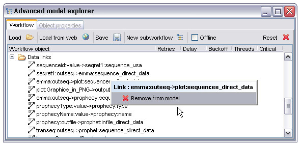
Naming for the data links is in the form of the processor name and port name for the output or data source, separated by a colon, then an arrow and the same syntax for the sink or input port it links to. In the case of workflow inputs and outputs there is no processor name, just the name of the output or input.
As with the data links these are primarily for information but also allow removal of individual control links. The naming syntax consists of the processor acting as the gate condition, two colons then the name of the processor being controlled by it. So, 'foo::bar' represents a condition stating that 'bar' may not start until 'foo' has finished.
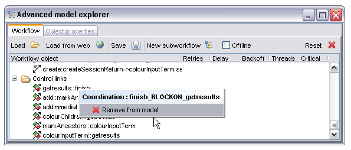
This component provides a read only configurable view of the workflow in graphical form. Workflow inputs, outputs and processors appear as coloured boxes with arrows between them to represent data and control links. Options are available to configure the layout and level of detail shown and the resultant diagram may be saved to disc in a number of different formats. It is intended to allow a quick visual overview of the structure of a workflow.
The toolbar consists of five items:
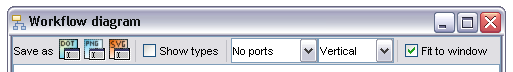
All saved files will have the same layout, port display, alignment and type display as the current visible image. They will not, however, be scaled in any way. The various options are to save as dot format text (the native format used internally and by GraphViz from AT&T research), PNG image (a bitmap graphic format suitable for web pages, Word documents etc) and SVG (a vector graphic format, preferable if you have tools such as Adobe Illustrator which can work with it as there is no loss of detail from scaling, particularly suitable therefore for posters).
Selecting any of the save options will display a file chooser in a format appropriate to your operating system. You will need to add the appropriate file extension yourself, saving dot files as .text, png as .png and svg as .svg appropriately.
This checkbox determines whether the diagram should include information about the MIME types and collection structures being transferred between processors in the workflow. The image below shows the diagram panel displaying a workflow with no port information, vertical layout and no types.
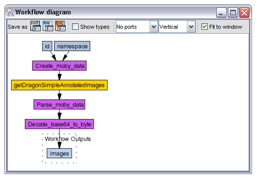
If the 'Show types' checkbox is selected the display changes to the following:
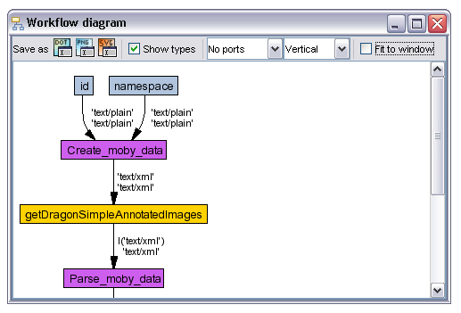
Each solid dark arrow (a data link) has two types. The upper of these is the type of information flowing out of the output of the processor the link is from, the lower that of the input the link is to. In most cases these will be identical, for example in the case of the link between processors 'id' and 'Create_moby_data' the type is plain text at both ends of the link.
A more interesting point in the above image is the link between 'getDragonSimpleAnnotatedImages' and 'Parse_moby_data'. In this case the output is a higher cardinality than the input, there is a list of XML text items being fed into a port which takes a single XML text item. This is not a problem, Taverna will automatically iterate over the input set, running the 'Parse_moby_data' multiple times. In general Taverna syntactic type expressions are of the form l('text/plain'), 'text/xml' or l(l(l('image/png'))) - the l(...) indicates a list of the enclosed type, and can be nested arbitrarily deeply, the mime type or types enclosed in the single quotes act as hints to the rendering and other systems as to how the data should be displayed. More information on exactly how the collection structures are used to power the iteration system is available in the section on iteration.
Diagram views can have one of three settings for port display. The two images above were generated with no ports shown; this is useful to get a view of the overall structure of the workflow. It is impossible, however, to see exactly where the data links are connecting - the processors 'id' and 'namespace' both feed into 'Create_moby_data' but there is no indication as to which inputs they connect to. This additional information can be enabled by selecting either 'All ports' or 'Bound ports' from the drop down list:
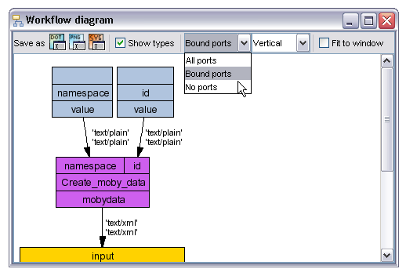
Data links now connect explicitly to particular inputs and outputs, in this vertical view the outputs of each processor are below the processor name and the inputs above. The 'Bound ports' view shows only ports which are the subject of a data link. Switching to the 'All ports' view shows all processor inputs and outputs whether used or not. This view is often rather unwieldy when processors have upwards of forty inputs (this is not uncommon). For layout reasons the default alignment switches to 'Horizontal' when this is selected, in the view below it has been explicitly reset back to the 'Vertical' state for comparison purposes:
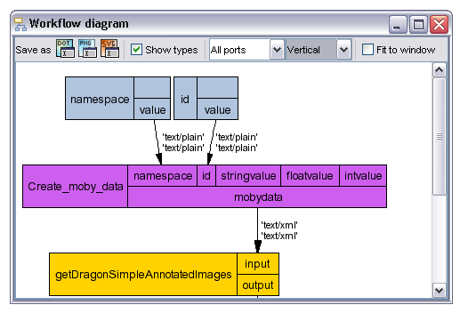
The unused ports 'stringvalue', 'floatvalue' and 'intvalue' on 'Create_moby_data' are now visible.
The default alignment shows workflow inputs at the top of the diagram, outputs at the bottom with data therefore always flowing from top to bottom. For some diagram views the layout is better with data flowing from left to right, this can be selected by choosing the 'Horizontal' alignment option from the drop down menu. The previous display with horizontal rather than vertical alignment is shown below:
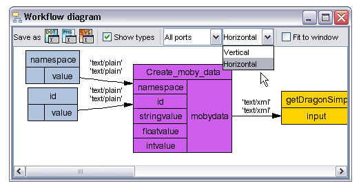
This view is generally more compact when all ports are shown, especially for processor types such as Soaplab which tend to have large number of inputs.
When selected the current diagram is scaled to fit entirely within the bounds of the Workflow diagram window, when de-selected the scrollbars can be used to scroll around the full scale image. This setting has no effect on any saved diagrams, it only affects the view within Taverna.
Colour is used both in the diagram and explorer views to denote the service architecture behind each processor. The diagram below shows a workflow including examples of each different processor type (excluding the biomart and styx based operations):
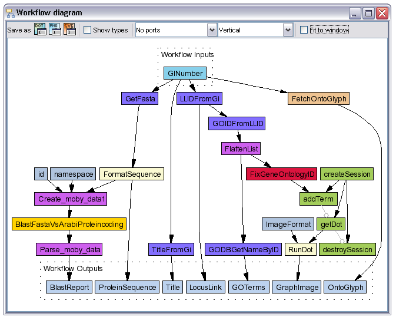
The eight different processor types in this workflow (and the three not shown) are as follows:
| Type | Example | Description |
| String Constant | namespace | Local operation to emit a single constant string. |
| BioMoby | BlastFasta... | Service based on BioMoby, see http://www.biomoby.org. |
| Local Java | Create_moby_data | Local operation coded as a Java class, used for common or particularly generic functionality. |
| SeqHound | TitleFromGi | Call to a SeqHound server, see http://www.blueprint.org/seqhound for more details. |
| Soaplab | FormatSequence | Service wrapper around a legacy command line tool such as, in this case, seqret from the EMBOSS tool set. |
| Workflow | FixGeneOntologyID | A nested workflow exposed as a single operation. |
| Web Service | createSession | A processor accessing a standard SOAP service. |
| Beanshell | FetchOntoGlyph | User editable scripting operation, in this instance using interpreted Java. |
| Biomart | Not present in diagram | Configurable parameterized query over a Biomart data warehouse dataset. More information is available at http://www.ebi.ac.uk/biomart. |
| Styx Grid Service | Not present in diagram | Processor based on the Styx Grid Service service framework developed at Reading eScience Centre, link at http://www.resc.rdg.ac.uk/projects.php |
| API Consumer | Not present in diagram | Allows import of Java APIs as workflow components, processors correspond to constructors and static or instance methods. |
This component provides facilities to manage the various services available to the workflow designer and allows the user to manage service libraries, create instances of a service in the form of a processor within the workflow, search services and other such functionality.
Services are shown in a hierarchical view. The exact semantics of this hierarchy vary by service type; soaplab, for example, has some concept of service categories so the view for a soaplab server shows the top level installation, then child nodes corresponding to the various categories and finally leaf nodes corresponding to actual services:
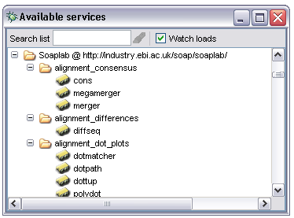
Biomoby services are located by accessing a central moby repository, in this case the hierarchy is constructed from a root node specifying the repository, then child nodes for each site hosting services and leaf nodes for each individual service:
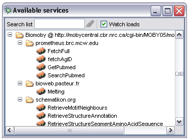
In general all service types follow this pattern, the leaf nodes are always individual services with other nodes representing some kind of containment.
A special case is that of workflow nodes - these are nodes representing entire Taverna workflows but in addition may be expanded to show copies of the services within those workflows, effectively allowing the user to reuse components from another workflow without having to figure out where the component was originally found. An example of this is shown below:
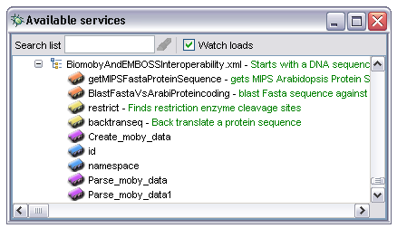
The primary function of the service panel is to allow users to create new processors within the current workflow. This can be accomplished either through drag and drop or through the context menus available by right clicking on the nodes in the service panel.
Any node representing a service may be dragged from the service selection panel into the AME. This also applies to nodes representing entire workflows in which case the workflow will be created as a nested workflow processor. The effect of a drop into the AME varies by location. If the node is dropped into area 1 in the diagram below it will be created as a new processor. If, however, area 2 is the target the effect will be to create a new alternate to the processor node the service was dragged onto.
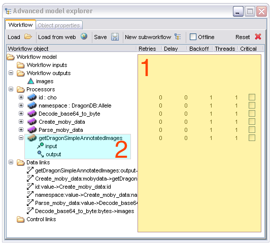
As an alternative, new processors may be created by right clicking on the service to be used; this shows the following options:
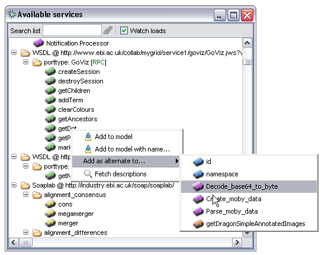
Selecting 'Add to model' will create a new processor with the same name as the service node. If this name is unavailable the workbench will append a number to it until it is, creating processor names such as 'getDot1' rather than 'getDot'. If the 'Add to model with name...' is selected a dialogue is shown allowing the user to explicitly name the processor (processors may be renamed at any time from the AME by double clicking on their names there). The 'Add as alternate to...' submenu allows the user to specify that the new processor should be created as an alternate to the selected pre-existing processor in the workflow.
As processor names often do not correspond to the names of items in the service panel it can be helpful, especially when debugging a non functional workflow, to find out which node in the service panel would have produced a specific processor in the AME. To do this simply drag the processor node from the AME into the tree area of the service panel, the node corresponding to the service of which the processor is an instance will be selected and displayed in red if found. Some nodes, most noticeably beanshell scripts and string constants, may not be found correctly, this is due to the way they are represented within the services panel but for the majority of cases this approach works.
An additional option appears in the context menu when a workflow node is selected. This 'Import workflow...' option allows the user to import the entire contents of the workflow specified in the same way as if it had been loaded from the AME. Rather than being created as a nested workflow processor the workflow is loaded alongside any existing processors. To avoid name collisions (all processor names must be unique within a given workflow) the user can in addition specify a prefix string which is prepended to all processor names in the new workflow. The dialogue to set the prefix is shown when the 'Import workflow...' option is selected, pressing return without entering any text will be interpreted as 'no prefix'.
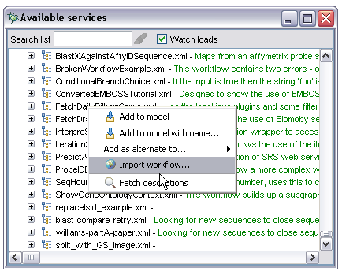
The service panel may be searched by regular expression. For convenience the text box in the toolbar allows the user to enter a fragment of a service name and either use the return key or the search icon to the right of the text box. As the user types all matching services are shown highlighted in red, when the search is activated by return key or search button the tree is collapsed then re-expanded to show all nodes matching the specified search. This is particularly useful if the user knows exactly what he or she is looking for. The image below shows the search in action:
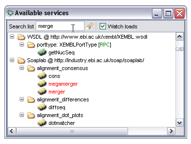
Some types of service support a level of self description. Services based on soaplab, Biomoby, Seqhound and nested workflows can all provide textual descriptions of the operation the service performs. In order to fetch these descriptions the user can select the 'Fetch descriptions' option from the context menu on any node in the service panel other than the root. This will then start fetching descriptions in the background and adding them to the service panel as and when they are found. Descriptions are fetched for all nodes below the selected one in the tree, including the selected node itself. So, the user can fetch descriptions for a single operation, soaplab category, entire biomoby installation etc:
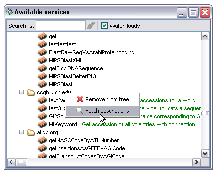
Descriptions are not fetched by default because, depending on the service concerned, they may incur a significant cost in terms of time and network activity. For example, to describe a soaplab service the service itself must be contacted and the description fetched - while each one is relatively small automatically fetching all of them would bring a slower network connection to its knees.
Taverna will not re-fetch a description when there is one present. This has particular relevance in the case of workflow processors. The child nodes (corresponding to the processors within the workflow) may have manually annotated descriptions added using the AME when that workflow was created, these descriptions will not be overwritten by any automatically fetched ones. In addition Taverna will flag resources with no descriptions and not attempt to re-fetch each time.
The service panel may be populated with available services in several distinct ways:
The context menu for the root node in the service panel, labeled 'Available Processors' can be used to add single 'scavengers' to the tree. A scavenger in this context is a part of Taverna's code which allows it to find services. There are a variety of options the user can select:
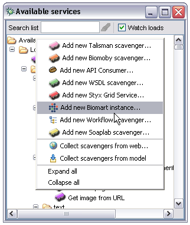
The Talisman scavenger can be ignored here, it is extremely specialized and only applicable to those already using the Talisman web application system. The others, however, operate as follows:
Asks the user for the location of a Moby Central repository. It uses this repository to determine all available hosts and their services and adds the tree thus created to the service panel.
Allows the import of pre-prepared Java APIs. This is used in conjunction with Java libraries augemented with annotations created by the API Consumer tool (see that tool's documentation for more information). This allows the import of existing component systems such as caBIG, BioJava, JUMBO, CDK etc.
Asks the user for the location of a Web Service Description Language (WSDL) file on the web. It inspects this file to pull out all appropriate operations and adds them as WSDL based service nodes to the services panel.
This service type is currently experimental and interfaces to the peer to peer streaming enabled service framework developed using the Styx protocols either natively or layered on top of the Inferno embedded operating system. If selected this asks for the host and port on which the SGS container is running and presents each contained service under a node representing the host in the services panel.
Asks the user for the parameters required to connect to a Biomart data warehouse. Uses the metadata available from the warehouse to get all available data sets and adds each set to the services panel under a new Biomart node.
Asks the user for the URL to a single XScufl definition file. Adds the workflow as a node in its own right and also adds each processor within the workflow as a child node before adding the workflow node to the services panel.
Asks the user for the root URL of a soaplab server. Interrogates the server to get all available application categories then for each category creates a list of services in that category. Creates a new soaplab hierarchy and adds it to the services panel.
Asks the user for an initial URL, uses this to start a web crawl looking for XScufl definitions and WSDL files. If it finds any it will add them below a top level 'web crawl starting from...' node in the service panel. This scavenger runs in the background as it can potentially take a considerable amount of time to complete.
Inspects the current workflow (shown in the AME) and infers the existence of any services the workflow uses. For example, if a workflow uses one operation from a soaplab installation this operation will notice that, infer the existence of the soaplab server and create a new soaplab scavenger which will then contain all the other operations that server supports. This is an explicit version of the implicit functionality enabled by the 'watch loads' checkbox.
If the 'Watch loads' checkbox in the Available Services toolbar is selected the current workflow will be watched. Any time a new service is added the services panel will initiate a new 'Collect from Model' operation. This means that a user can import all the services a particular workflow uses by simply loading the workflow then resetting it.
Although most services are only useful when composed into workflows there may be occasions where it is handy to invoke a single service directly. Specific cases are where the service is providing some controlled vocabulary such as a list of valid database names, or where the node is actually a complete workflow as in the diagram under the 'Drag and Drop' section below. Any service node within the tree may be called directly by right clicking on it and selecting 'invoke' from the context menu:
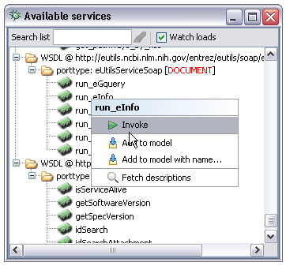
The behaviour differs slightly depending on whether the node selected is a single service (as in the example above) or an entire workflow. If a service is selected this service will be inserted into a trivial workflow containing workflow inputs and outputs corresponding to the service inputs and outputs. In the case of a workflow the workflow is run directly. In either case the enactment engine is used to run the new workflow so the various input specification behaviours are the same as those used when running the main workflow from the workbench.
XScufl definitions or directories may be dragged onto the toolbar area of the Available Services window. This initiates a file traversal looking for XScufl files, and can be used to load a library of workflows from the local file system. In a sense this is the file equivalent of the 'Collect from Web' option in the context menu. If a directory is dropped a corresponding hierarchy in the tree is created, all leaf nodes are workflows and their child processes:
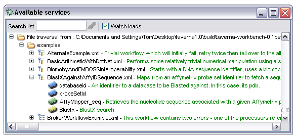
The service panel can be preloaded with services by specifying various defaults in the mygrid.properties file (see configuration section). Specifically, the following service types can be preloaded into the service panel:
The values for these properties correspond to the user inputs required for the equivalent context menu options.
The Enactor Launch Panel (ELP) allows the user to enter input data for a workflow then launch the workflow enactor with that data. It is only shown if the workflow requires some input, if the workflow has no user specified inputs this panel is never shown and the enactment status display is shown directly.
The image below shows the initial state of the ELP when a workflow with one input called 'GINumber' is enacted:
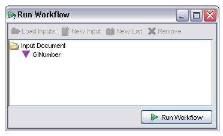
The user selects the input from the tree and a new pane appears showing any workflow input metadata specified when the workflow was created in the AME. In this case this includes a free text description and MIME type:
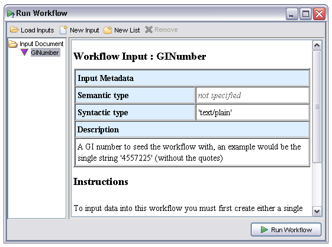
To create a new value for this input the user selects the 'New Input' or 'New List' options from the toolbar. These allow the user to respectively create a new single input or a new collection. Inputs in Taverna are either single items or collections, collections in turn containing either single items or other collections but never both. This constraint is enforced in the input panel. Suppose the user wishes to specify a list of GI numbers as input for this workflow, he or she clicks on the 'New List' button then three times on the 'New Input' button to create three textual items within the list. The individual items initialize with a default textual value:
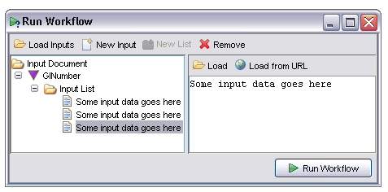
For textual data the value may be entered directly into the pane on the right of this window. For textual or binary data the data may also be loaded directly from a file (the 'Load' option) or URL (the 'Load from URL' option). Binary data such as images may only be loaded from these buttons, the text input area will be disabled in these cases.
Multiple inputs within a list may be loaded from a collection of files by selecting the 'Load Inputs' option from the toolbar. This then prompts the user to select one or more files on disk and loads the contents of each file into a separate data item. This is useful if you have a directory containing a large set of input files, much faster than creating and loading each one individually.
Input data items may be removed by selecting the item and clicking on the 'Remove' button in the toolbar.
Internally Taverna uses an XML representation of the entire set of inputs. This representation may be viewed by selecting the 'Input Document' node in the tree, the display looks something like the following:
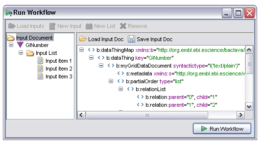
The exact contents of the XML view are unimportant at this point. It is potentially useful, however, to save the entire input document for later re-use, in particular when a workflow is failing on certain input sets. The document may be saved in XML form from the 'Save Input Doc' and reloaded from the 'Load Input Doc' option.
Once all inputs have been defined the workflow may be enacted by clicking the 'Run Workflow' button at the bottom right of the window.
The Enactment Status Panel (ESP) shows the current progress of a workflow invocation, displays results to the user for browsing and handles storage of those results to local or remote data stores in a variety of formats. It appears when the user invokes a workflow; in the case of workflows with user defined inputs it appears after the user has entered any input data into the ELP, otherwise it appears immediately. There are four main tabs shown at different stages during and after a workflow enactment:
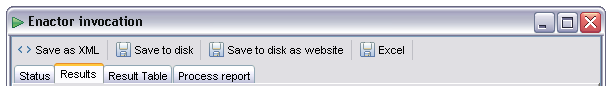
This tab, which is active at all times during and after a workflow enactment, performs two roles. Firstly it shows a summary of the current state of each processor. This is displayed in a table, with one row per processor. The columns indicate processor type, name, current status, the time the status last changed and any additional information:
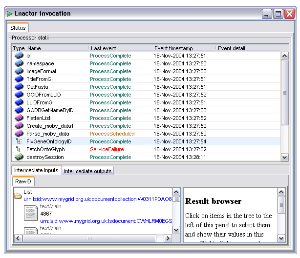
The Last event field shows the most recent state change of the specified processor. All processors start with the ProcessScheduled state. When all the dependencies for a processor are satisfied (all data available and any control links activated) the processor is transitioned to the 'Invoking' state or 'InvokingWithIteration' In the case of iteration occurring over the inputs to that processor. In the event of failure the processor will potentially go to any of 'WaitingToRetry', 'AlternateScheduled' or 'ServiceFailure' states depending on how fault tolerance is configured. The state diagram under the basic fault tolerance section gives more details of the possible states in graphical form, the events correspond to states in that diagram.
Some events, especially 'InvokingWithIteration' carry additional information which is conveyed in the Event detail column. In the case of iteration this shows how many iterations are expected and the index of the current one.
The second role of the status display is to allow the user to inspect intermediate inputs and outputs of individual processors both during and after a workflow invocation. This is especially helpful to determine the reasons for abnormal workflow operation (such as a processor failing) or to check that the data is really what the user expects when designing the workflow.
To inspect the inputs and outputs of a given processor the user selects the processor in the status table. The inputs and outputs (if present, a process which is still scheduled will have neither, one which is invoking or failed will have no outputs) are then displayed in tabs below the status table. This part of the display is identical to the result browser in functionality.
The Results tab is activated once the workflow has completed. It is automatically selected when this happens, meaning that very fast running workflows may never display the workflow status tab (although it can always be manually selected). This section allows the user to view both individual result items and any collection structures such as lists in which they occur. The output for a sample workflow is shown below:
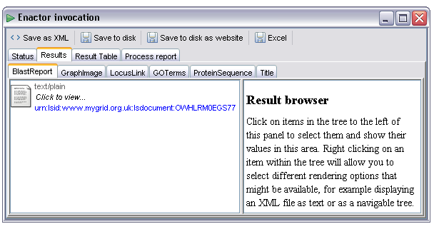
This display shows six named outputs. These correspond to workflow outputs defined in the AME when the workflow was created. Note that if a particular part of the workflow has failed some output tabs may not be present, only outputs which contain results are displayed here.
To show an individual result the user selects it from the panel on the left of the result display. This then displays that item in the panel to the right using the default renderer for that data type. In the example below the BLAST report output from the workflow is too large to be shown in the panel on the left (hence the 'Click to view...' notation) but can be displayed as plain text by selecting it:

Some outputs will contain more than one result. In the example below the 'GOTerms' output contains a list of plain text items. As these items are relatively short the actual values are shown in the left hand panel, individual items could be selected as in the example above but in addition the list itself can be selected. In this case the right hand panel will attempt to display all the items in a list, as these items are all textual this looks like a single document containing one item per line:
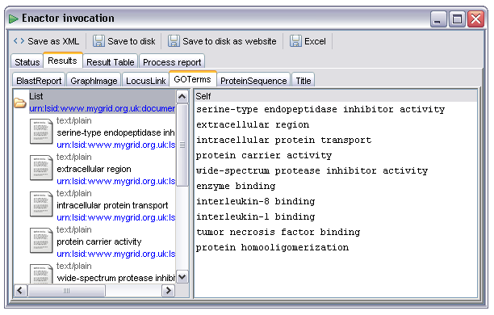
Workflows may output binary data in various forms. Provided the correct MIME types are specified for the workflow output the renderer selection mechanism will by default select an appropriate renderer component. In the example below the output 'GraphImage' has been selected. This output has been annotated with the 'image/png' MIME type from the AME's output metadata editor. As a result the default renderer is one that can understand and display images:
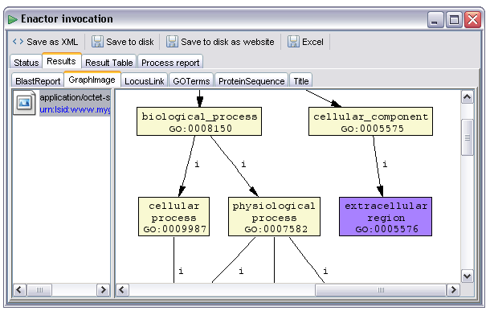
As with textual items collections of images (or other binary data) are also handled, the following image is from a workflow using the EMBOSS tools - these generate lists of images corresponding to pages of output, in this case from the 'plot' tool rendering a multiple sequence alignment:
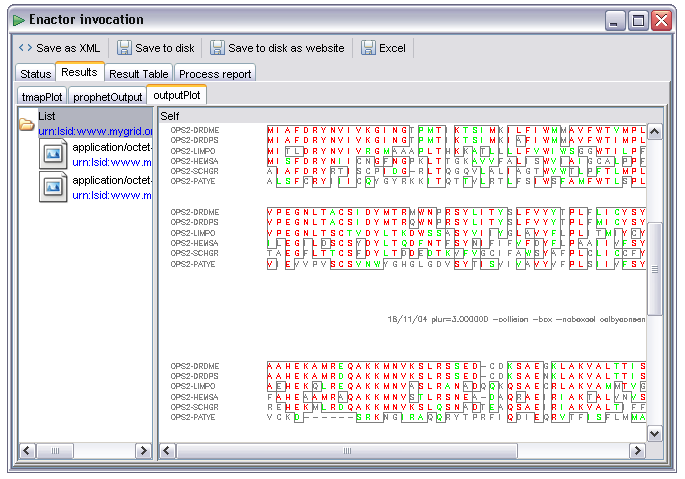
In some cases there may be multiple available renderers for the data item. For example, all the 'text/....' types can be rendered as plain text. There are several however which may also be rendered in some more specific way as well, for example as an XML tree or rich text format document. The example below shows a Genbank record displayed as text. If, however, the user right clicks on the data item he or she is presented with a menu offering other rendering options:
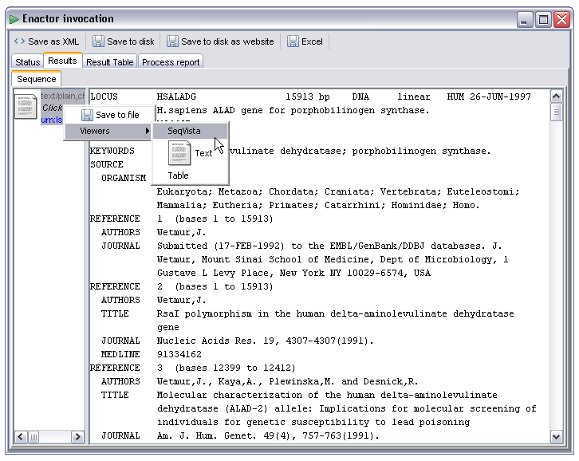
By selecting the SeqVista renderer the user is then presented with a much more friendly display. This renderer is an embedded instance of the SeqVISTA tool (http://zlab.bu.edu/SeqVISTA/) and is used to display a variety of sequence file formats:
The SeqVista renderer is currently attached to the chemical/seq-aa-genpept, chemical/seq-na-genbank, chemical/x-swissprot, chemical/x-embl-dl-nucleotide and chemical/x-ppd MIME types.
Another custom renderer, new in version 1.0, is one based on the Jmol structure renderer. By flagging an output as chemical/x-pdb or chemical/x-mdl-molfile the user can cause the output to be passed to an interactive 3d visualizer. Although the MIME type is suggestive of PDB flatfile format output this can be used to force the use of Jmol for other formats that application can handle, more details of which are available at http://www.jmol.org. The renderer within Taverna is based on the current pre v10 build of Jmol, a screenshot of the '1pdb' molecule is shown below, the user can manipulate the 3d visualization in the normal way within this panel:
For molecules over 300 atoms the display shown above is used, this corresponds to the following RasMol script:
wireframe off; spacefill off; select protein; cartoon; colour structure; select ligand; spacefill; colour cpk; select dna; spacefill 0.4; wireframe on; colour cpk;
Where there are fewer than 300 atoms (small molecules, ligands, cheminformatics apps) a different script is used - with versions of Taverna prior to 1.1 the same script was used for all structures leading to some small molecule structures effectively becoming invisible. The script used in these cases for version 1.1 onwards is as follows:
select *; spacefill 0.4; wireframe 0.2; colour cpk;
Thanks to Egon for this change.
Results may be saved to disk either as single items or as entire result sets.
Single result items may be saved by right clicking on the item and selecting 'Save to file' from the context menu:
The 'Save as XML' button allows the entire result set to be stored as a single XML document. This can be reloaded into the data viewer tool (included with the workbench distribution) and could be regarded as the master data format. Files in this format allow the entire result display panel to be reproduced, including the various other export options and metadata such as data item LSIDs. When selected this prompts the user for a location for the save file. The XML file produced is not intended to be human readable!
The 'Save to disk' button allows the user to save all data items into a directory structure on the local disk. This is effectively the same as selecting all items individually and using the 'Save to file' option on each one with the additional feature that it handles collections such as lists. The user is prompted for the name of a new directory into which all workflow results are stored. In the case of single items the results are saved as files with the filename being derived from the output name, in the case of collections a new directory is created under the top level result directory with the name of the workflow output. Items within the collection structure are then created with names generated from numbers starting at zero. An example output directory show in the Windows XP explorer would look like this:
The single items 'BlastReport', 'GraphImage', 'ProteinSequence' and 'Title' have been created as files with the appropriate file extensions (guessed from the MIME types) with the two lists 'GOTerms' and 'LocusLink' created as directories. Opening the 'GOTerms' folder shows the individual list items as distinct files:
Note that as most services run under UNIX variant operating systems the text files are likely to have UNIX line endings, opening them with Notepad will generally result in a garbled mess, Wordpad or Emacs will work better. This only applies to Windows users, Linux and Solaris users should use whatever text editor is available on their installation.
The 'Excel' button allows the export of all textual results up to two dimensions (maximum depth of collections is a list of lists of text) to a single Excel spreadsheet. When selected the user is prompted for the name of an Excel file (extension .xls). This is more or less meaningful depending on the workflow. An example workflow which emits a list of GO terms and their descriptions might produce an output such as the following in Excel:
In the case of this workflow there is a direct correlation between item 'n' in the name list and item 'n' in the id list, be aware that this is a property of this particular workflow and may not hold in general. In this case, however, the resultant spreadsheet is a sensible tool to view the relationship between these outputs.
The 'Result Table' tab allows the user to view some of the relationships between workflow inputs, intermediate results and workflow outputs within the current workflow invocation. In the example below the same workflow used to generate the previous Excel screenshot is shown. The selected cell 'tumor necrosi...' is shown in full in the right hand panel. The cells highlighted pale blue in the table show intermediate values and workflow inputs which were used to obtain the selected cell's value. In this case it shows that the workflow input named 'gi' with value '4557225' resulted in the GOIDFromGi:return intermediate output with value '43120' which then in turn resulted in the selected cell. Cells coloured pale blue to the left are ancestors giving rise to the selected data item, those to the right (none in this view) are descendents who's values are derived in some way from the selected cell:
The result table view is disabled by default in version 1.0, to enable it you must add the following to your mygrid.properties file:
taverna.resulttable.enable = true
The 'Process report' tab provides a view on the process log for the workflow. This is displayed whether the workflow succeeded or not. For each processor in the workflow a node is created in the log, events are then appended on to this node. The events are the same as those in the status display, with additional information added as child nodes onto the event node concerned. This display is only of interest when debugging workflows, in the event of failures it can potentially show enough information to diagnose the problem. This information, however, is generally not very friendly, it often consists of Java stack traces and error reports directly extracted from the service access plugins. An example of a successful enactment trace is shown below:
The Interactive Graphical Editor (IGE) is a new component as of version 1.1 of Taverna. While still experimental it can be used to combine much of the functionality of the AME and graphical display. More details will appear here as and when the code becomes stable, in the meantime please feel free to play with it!
The Information Model Browser (IMB) is available in myGrid releases of Taverna. It connects to an instance of the myGrid Information Repository and allows navigation and manipulation of the entities contained within the repository. If you do not have a repository installed and configured you can safely ignore this section. Release 1.0 of Taverna does not include this component by default.
The IMB must be configured before use with a description of how to connect to an available repository. Configuration information is held in the file 'mir.properties' in the conf directory within the Taverna installation and consists of the URL to a WSDL document describing the repository soap service. If the repository is installed on Tomcat on the user's local machine the configuration will look something like this:
mir.wsdl = http://localhost:8080/axis/services/MIRAccessService?wsdl
Once this is configured, the IMB can be launched from within Taverna, via the 'Tools and Workflow Invocation' menu.
The initial display is a list of users fetched from the repository; to login the user must select a username and type in a password. As implied by the message at the top of the window, the password field is currently just a placeholder and any password will work. Most error messages at this point are due to misconfiguration of the repository access point, if these occur the configuration should be double checked:
Once logged in the MIB will switch to a tree view showing a representation of the objects in the information model and the relationships between them:
The tree is initially set with the selected user as the object to start browsing from; this can be changed at any time by selecting a new object, and clicking on the button at the far right end of the toolbar.
By right-clicking on any relationship, the user can add new or existing items to it or, if only one object is allowed, the object of the relationship may be changed. Workflows can be added to the MIR as the content of an operation, and they can then be reloaded back into Taverna by right-clicking on the content and selecting Load Workflow.
In order to avoid having infinitely recursive branches and to generally just stop the tree from becoming too complicated, the tree only creates children for the first instance of an object that it finds. For any other instances, the icon for the object is rendered transparently, and no children are created. Explicit selection of any one of those other instances will set that instance as the default and display children there.
At the bottom of the window is the workflow context. This information can be used by another taverna plug in to create new information model objects related to a specific workflow enactment. With a workflow context defined, workflow enactments will cause new experiment instances to be created and linked to the experiment design specified in the workflow context. The values in the current context are changed by selection of the appropriate node types within the tree. The image below shows the selection of an Experiment Design setting the appropriate context item:
Each lab book can have a custom view based on a query. The query can be edited by right-clicking on the lab-book and editing its properties. The query requires an information model class, and optionally one restriction (attribute, condition, value), all separated by commas:
The absence of any restriction will cause all objects of that type to be fetched and displayed in the lab book view, if the string in the 'rule' field of the example above were changed to 'Organization' all Organization objects would be retrieved. If left as defined above only Organization objects with 'name' equal to 'sdf' would be shown:
The available object types for custom lab book view and visible within the MIB are as follows:
SCUFL is an acronym standing for 'Simple Conceptual Unified Flow Language'. This section describes some of the features of this language which distinguish it from the various alternatives such as the Business Process Enactment Language (BPEL).
Iteration in this context is the repeated application of a process to multiple data items. An example might be the processing of a set of genomic sequence data files through a GC concentration analysis resulting in a set of concentration figures. In a conventional imperative language such as PERL this would be accomplished by explicitly creating a block in the code over which the execution loops until some condition is satisfied, a typical 'while <condition> do <something>' type structure, the condition most often being 'there are items left to process'. Taverna does not have this kind of construct, instead it provides a system closer to map functions in languages such as ML. While this might sound complex and foreign to most users it should be relatively intuitive to actually use.
Whereas an explicit iteration construct a la PERL requires the user to code the iteration into their script with specific commands and code structures Taverna's implicit iteration framework requires, in the simplest cases, no additional work at all. The user simply connects an output containing a collection of items into an input which consumes a single item of the same type. In the previous example the user might have access to a processor which consumes a single DNA sequence and emits a single floating point value corresponding to the GC concentration over that sequence. To iterate over a set of sequences the user simply connects the set of sequences into the same input - Taverna detects that there is a mismatch of this kind and repeatedly runs the GC concentration analysis over each sequence in the input set. As the normal output is a single floating point value the new output is a list of such values, the first corresponding to the first input sequence, the second to the second and so on. Of course, this iteration will tend to 'bubble down' the workflow as a result, if the next processor expected a single GC concentration number it will itself be run repeatedly on all results.
The corresponding wrapping logic also exists, if a processor expects a list of sequences and the user connects it to an output which provides a single sequence the single sequence will be wrapped up in a single item list.
The behavior in the above case should be self explanatory, however, there are also cases where multiple inputs have mismatched cardinalities; these are more complex and may require some level of configuration before they behave as desired.
The default behavior in these cases is to iterate over all combinations of input values. This could be exactly what is intended, for example an all against all sequence distance metric computation would be simple to implement within a workflow assuming the existence of a processor capable of returning a single pair wise distance, the user would connect a list of sequences to both inputs and the iteration system would iterate over all combinations. As there are two lists being iterated over in this case the output will be a list of lists of results, reasonable enough given that the all against all distance table is two dimensional.
There are cases, however, where this behavior is not desirable. Consider a processor which had as input a sequence and a list of features corresponding to matches within PFam or similar and which then returned an image showing the location of these features on the sequence. If this processor were invoked with a list of sequences and a list of lists of features (so one dimension higher than expected) in the manner described above the result would be non sensical, the output would be a list of lists of images where all sequences had all features applied to them - clearly this doesn't make any sense, the first item for one input is related to the first item in the other input and not to the second or subsequent ones so iterating over all combinations of inputs is meaningless. A preferable iteration strategy would be to pick the first item from each input list, run the process on that then pick the second from each list and so on to produce a list (as opposed to a list of lists) of output images. This would preserve the inherent relationship between the input items. Taverna allows this to be specified using the iteration strategy editor within the AME, accessed by selecting a processor node then opening the newly enabled tab.
The following image shows the iteration strategy editor for a simple processor which concatenates two strings together. By selecting the 'Create Iteration Strategy' button the user has created an explicit iteration strategy initialized to the default 'all against all' behavior:
The iteration strategy is displayed as a tree. The leaf nodes in the tree correspond to the individual inputs to the processor, in this case 'string1' and 'string2'. Non leaf nodes represent the different ways of combining the input iterators, the 'cross product' node represents the 'all against all' combination of its child nodes. In order to change the behavior to one where the inputs are consumed in the alternative 'first against first, second against second...' style the user selects the 'cross product' node and clicks on the 'Switch to...' button (which becomes the 'Switch to dot product' when the node is selected) to change it to a 'dot product' node:
Iteration strategies can potentially combine multiple different types of dot and cross product nodes, a processor which consumed three strings might have an iteration strategy defining the input to be the combination of all values of string1 with the dot product of all pairs of values from string2 and string3. Nodes may be dragged around within the iteration strategy editor, to drop a node onto a dot or cross product node as a child the user must flick the mouse to the right before dropping the node, an arrow will appear to indicate the gesture recognition. In the case below a new cross product has been added and the 'string2' leaf is being moved into it as a child, the mouse being flicked to the right indicating that the intent is to create a child node rather than drop as a sibling:
In the image above the iteration strategy is not normalized; the cross product of a single node is identical to the node itself. If the user selects the 'Normalize' button the iteration strategy will be reduced to its simplest form without any change in behavior.
Conditional branching is the term used to describe the set of operations such as 'if <condition> do <something> else do <something else>' and the various case and switch statements in conventional imperative languages such as C, PERL and Java. Taverna's language representaiton differs in some crucial ways from these languages so the representation of conditionals is different, the functionality, however, is equivalent.
Conditionals are driven by the control links within the workflow. As a process can only run when all upstream links, data and control, are satisfied it is possible to construct workflows where only a subset of the available downstream processors can run and where the others are left in the scheduled state. Effectively those chosen to run are in the 'true' branch of the conditional and those left scheduled in the 'false' branch.
In a workflow without any conditional structures it is recommended to avoid having the case where more than one output feeds into a single input. The behaviour in this case is to accept the first available input, removing any other data links in the process. If the workflow system did not remove the alternative links the processor would never run, these links would be detected and the processor would wait until they had all been satisfied - obviously if the processor upstream has been left in a scheduled state the link will never be used and the workflow will stall.
As an example consider the following workflow (held in the examples directory as 'ConditionalBranchChoice.xml'):
Original Workflow |
Input = 'true' |
Input = 'false' |
The single input to this workflow is a string containing the value 'true' or the value 'false'. The two processors 'foo' and 'bar' are string constants which emit the stereotypical example string values, and the last processor is a list echo operation - this is used because we need some kind of operation which can accept the outputs of 'foo' and 'bar' and relay them to a workflow output. If the input is the string 'true' the following occurs:
Were the input 'false' the rightmost case in the diagrams above would occur. Note that there is no inherent restriction on the number of branches - if the input were instead a beanshell script with four outputs it could be used to control four branches or any combination thereof. In this sense the conditional structures available in Taverna are somewhat more expressive than those in conventional imperative languages.
There are often cases in workflow construction where the output of one processor is not quite right for the input of the next. There are various options to cover these cases - the user can make use of so called shim services exposed in the same way as other operations, he or she could create a new service to perform the transformation or, for relatively simple cases, he or she could create a single non service component in the form of a script.
Beanshell scripts, as the name suggests, use the Beanshell scripting engine. This gives the user access to a form of interpreted Java; this section therefore assumes a minimal level of Java knowledge, for users who have never attempted Java programming we recommend the Java tutorial on Sun Microsystem's website at http://java.sun.com/docs/books/tutorial/. There are certain minor differences between the core language described there and the version used by the Beanshell, these are further documented at the Beanshell web site at http://www.beanshell.org/ - the good news is that almost all these differences make it easier to use than conventional Java; it's unlikely a typical user would ever encounter them however.
As an example of a simple script consider the following use case: Given three raw sequence strings (protein or nucleotide) create a single string containing the three sequences with FASTA format titles. For simplicity's sake assume that the titles are all fixed (although we could easily have the titles as parameters to the script).
Create a new Beanshell processor by dragging the 'Beanshell scripting host' from the local services section of the service selection panel into the advanced model explorer:
The first things to configure, after changing the name from the default, are the input and output ports of the new instance. The Beanshell configuration panel is accessible from the right click menu of the new processor, selecting 'Configure beanshell...' from the menu:
This will open a new window containing options to configure the script itself and the inputs and outputs. Selecting the 'Ports' tab allows the user to create, remove and modify the types of the inputs and outputs to this processor. A new input is added by entering the name in the text box to the right of the 'Add Input' button then clicking on the button to create the input. The input ports appears in the Inputs list along with the default type 'a Plain Text' corresponding to a single string with no additional MIME type information. Although in this case the default is the correct value this can be changed by selecting either the 'Plain Text' at which a drop down list will present the available types, or the 'a', in which case options are available to cycle through the collection types such as 'a list of'. Leave the defaults for now and use the port creation mechanism described above to create three inputs and one output with sensible names:
Now the processor has the correct inputs and outputs the remaining task is to specify the logic connecting these together in the form of a script. Selecting the 'Script' tab makes available a syntax highlighting editor (based on JEdit) into which the user must enter a Beanshell compatible script:
Having defined the available ports (both inputs and outputs) the script engine will, when this processor is enacted, create new bound variables in the scripting environment corresponding to the names of the input ports. It will extract bound variables with names corresponding to the output ports at the end of the invocation, and use the values of these as the output values of the processor. In this case therefore the script must make use of the variables named 'seq1', 'seq2' and 'seq3' and ensure that there is a variable of the appropriate type called 'fasta' bound in the environment when the script completes. The types are determined by the 'a', 'a list of' ... options in the Ports section - if the type is a single Plain Text the variable bound to it will be a String object, if a list of Plain Text the value will be a Java List implementation where the items in the List are String objects and so on. Corresponding logic applies to the output - if the Ports section declares that there is an output called 'fasta' with type 'a Plain Text' the script must, before it completes, define a String called 'fasta' containing that result value.
The image below shows a script (more verbose than strictly required) which fulfils this contract and performs the desired function, those familiar with Java will realize that this could be done in a single line:
When the script is changed the user must click on the 'Save Script Changes' button - this commits any changes to the script text back into the processor definition.
Because the Beanshell processor only exists as part of a workflow (unlike, for example, a SOAP service which exists on some networked resource) there is a potential problem with reuse - having written a potentially complex script it would clearly be desirable to share and allow some level of reuse but because the script is within a workflow it cannot be simply found as a networked service can be. Fortunately it is possible to share scripts by creating a workflow containing the script and making the workflow definition available online - this can then be used as the target for either a web crawl or single workflow scavenger which will in turn expose the script as a child element of the workflow scavenger. The script can then be treated exactly as any other processor located in this way.
The Biomart system (http://www.ebi.ac.uk/biomart) is a flexible data warehouse aimed at complex interlinked biological data sets. Originally developed for the Ensembl project it has now been generalized to allow other data providers access to its functionality. As an example the EBI's Biomart instance contains data from Ensembl, VEGA, DbSNP, UniProt and PDB data sets - Taverna's biomart query integration provides full search and retrieval functionality over these data sources.
Biomart instances can contain multiple data sets, so the basic unit used in Taverna is the data set, or, more specifically, a single configured query over a single data set.
A new Biomart instance is added to the services panel from the right click menu on the top level node and selection of the 'Create new Biomart instance...' item. This then displays the following configuration panel:
The exact options required by this panel will be dependant on the Biomart instance the user is connecting to - the defaults shown here are those for the EBI Biomart server which contains three distinct sets of datasets: Ensembl, PDB and Uniprot. VEGA and DbSNP data is also held in the Ensembl section here. Once the user has configured this panel appropriately a new node becomes available in the service selection panel, expanding this node shows the various distinct data sets available to query:
The query is created by dragging a dataset (shown in the panel above) into the advanced model explorer as with any other processor type. Similarly to the Beanshell scripting engine all Biomart processors require configuration before they are of any use within the workflow. The configuration section is accessible from the 'Configure biomart query...' option in the right click context menu for the Biomart processor. When selected this will (after a brief pause while the configuration metadata is retrieved from the Biomart instance) show the query configuration panel. The example below shows the initial configuration screen for the data source based on R. Norvegicus genomic data in Ensembl:
Biomart query processors have two sets of configuration, filters and attributes. Filters define restrictions on the query and are particularly important if the users wishes the query to return anything other than entire genome's worth of data. Attributes on the other hand define the values which the user is interested in. Conceptually filters are inputs (although not all filters appear as input ports) and attributes are outputs.
The configuration window starts with the attribute configuration page open. Attributes are themselves divided into pages, in this case 'Features', 'Structures', 'Sequences' and 'SNPs'. As a sanity check and to prevent workflows overwhelming the data services, pages are only selectable if all current attributes are visible on the target page. For example, if the user were to define a sequence (not visible as an attribute on any page other than the 'Sequences' page) the other pages would be locked. Attributes are duplicated across multiple pages, for example the 'REGION:' subpage is identical in several attribute pages, so selection of the main attribute page is an important part of configuring the query. If the user attempts to select a page which has been locked he or she is presented with a message such as the following:
Selecting an attribute in one of the subpages states that the attribute should be returned for each record passing all defined filters. Each attribute therefore maps directly to an output on the processor - where possible sensible names are chosen for the processor outputs such that it is reasonably obvious which corresponds to which. The images below show the attribute selection page and the corresponding processor in the advanced model explorer :
Sequence attributes, currently only available in Ensembl based data sets, differ slightly from normal attributes in that they allow a certain amount of configuration of the type and extent of sequence retrieved. The example below shows the sequence attribute configuration panel:
The user may select between Genes or Transcripts / Proteins, then further within each type using the 'Desired sequence options' selector. Where applicable the two text input boxes allow definition of the extent of three or five prime flanking sequence retrieved. In this case the query will return 200 base pairs of genomic sequence from the five prime flanking region of any located genes.
Filters are critical to almost all queries. If no filter is defined the query will return all records within the selected data set - as data sets generally correspond to entire genomes or databases these queries are therefore substantial. Filters are configured by selecting the 'Filters' tab in the Biomart configuration panel:
The image above shows two distinct kinds of filters: The drop down lists represent filters over controlled vocabularies whereas the text entry boxes represent arbitrary textual inputs (although from the context here it is clear they are actually intended to be numeric values, at least for the chromosomal coordinate inputs). Some filter options are disabled by default, in this case there is no way to enter the start and end band filters as no chromosome has been selected - if the user selects a chromosome the band filters will be enabled and populated with appropriate values.
The image below shows two more filter types, both based on boolean expressions. The pair of filters at the end of the page are simple boolean filters, they allow the user to specify whether a particular constraint must be satisfied, must not be satisfied or is ignored (no filter, the default). The filters at the top of the page are similar but the condition is configurable, the entire filter is constructed from a combination of the drop down subject with the predicate and object specified by the boolean selection:
The image below shows an ID List based filter. These are used to constrain the query to only those results matching an explicitly stated list of values. The drop down list at the top of the filter selects the type of ID to filter on and the text entry area accepts IDs, one per line, to be used as values in the filter. The user must select the 'Update IDs' button when this text has been changed, or the 'Clear' button to remove the filter:
The final kind of filter is one similar to the list based filter but where the item selected comes from a tree or taxonomy of terms:
Some types of filters may manifest as inputs to the query processor. These are always optional - if no upstream processor is connected to the input the query will proceed exactly as configured. If, however, a data link is connected the data will override the value parameter for the query. For example, if the user wishes to construct a workflow where Ensembl Gene IDs are used to fetch the corresponding sequences he or she specifies a filter based on Ensembl Gene ID (as with the ID list filter above) and overrides the specified values by connecting a string list to the appropriate input. When the query is run by the enactor the ID list configuration will be modified by the input data. This applies to all filters other than the two boolean filter types, all except the ID list filter accept a single string as a value override. The example workflow 'BiomartAndEMBOSSAnalysis' shows this facility in action:
Note - this feature is not adequately tested, so use at your own risk. Styx based services differ from the other types available within Taverna in that they are reference based rather than value based. For a conventional web service, soaplab installation etc the data required to start the operation is sent from the workflow enactor (so from the user's desktop machine in the default configuration) to the service, then the results from that service are sent back to the enactor. If the next process in the workflow is also on the same machine as that service the data will still have to go back to the enactor then back out - this is clearly not efficient and may become impossible in some cases.
In contrast, Styx based services pass data directly between the services and use the workflow enactor as a control mechanism. This has obvious potential advantages in terms of efficiency and performance at the expense of loosing some information about the running workflow - there is no way get get the intermediate results between two styx operations as the data never returns to the enactor.
In the workflow shown above there is a single string constant processor feeding data to the first of two styx services. This data is an actual data value, so the link is made to the 'stringIn' input. This has the effect of creating a stream of data out of the value passed from the SingleString processor and feeding it into the StyxService1.
As there are two styx services adjacent to one another in the workflow the designer can take advantage of the performance improvement derived from streaming data directly between the services. The output 'refStdOut' in StyxService1 is passed into 'refIn' in StyxService2 - the actual data passed here through the enactor is in the form of a URL corresponding to a stream to which the StyxService2 can connect and read data directly from StyxService1. When configured in this mode StyxService1 will complete immediately as far as the workflow engine is concerned - this may well not correspond to completion of the actual service though! One immediate benefit of this is that StyxService2 can start working on the partial results of StyxService1 before that service has completed.
The workflow output requires a value to be passed to it rather than a stream so the user links the output 'stringOut' in StyxService2. If either 'stringOut' or 'binaryOut' are connected to a downstream processor or to a workflow output the processor will not complete immediately and will instead wait, consuming data from the output stream and writing it into a value which is then passed to the next stage in the workflow through the enactor.
This hybrid architecture allows parts of the workflow to take advantage of the high performance and large data handling abilities conveyed by the use of direct streams between services while also benefiting from the simplicity of direct value passing where feasible.
Soaplab operations provide additional metadata and configuration focused on their usage for long running jobs. These are new functions from version 1.1 of Taverna onwards and are accessed from the context menu on any Soaplab operation.
Soaplab services provide metadata describing the service and each input and output. These data can be used to guide the composition of such services, to access this information you can right click on any Soaplab processor in the AME and select the 'Show soaplab metadata' menu option. This will then create a new window containing information about the processor - if there is a Help URL defined this will appear as a hyperlink allowing, for example, the EMBOSS documentation to be browsed directly from within Taverna's workbench.
Soaplab has the capability to run long running tasks in polling mode. In this mode the task is launched then periodically revisited to determine status - by using this mechanism the enactment engine can avoid problems with timeouts in the target service or in any intervening web proxies or firewalls. If you see errors such as 'Bad gateway' or 'Timeout' when running Soaplab processors this is the first thing to try.
Select the polling properties from the context menu of any Soaplab processor in the workflow:
This brings up a new window:
The 'Polling?' checkbox determines whether the enactor should use polling mode when interacting with the service, by default this is unchecked - if this is the case then Taverna will operate as it did in previous versions. When this box is selected the Interval, Maximum Interval and Backoff options become available and have the following meanings:
Interval - This is the delay in milliseconds inbetween attempts to fetch the status of the task, the lower this is the higher the load on your network (as more requests will be made per second) but the better the latency (how quickly Taverna notices the job's finished).
Maximum Interval - The polling interval increases over time (subject to the backoff factor), this allows you to define an absolute ceiling on the interval between polling attempts. By default this is one minute (60000 milliseconds)
Backoff - The polling interval is multiplied by this factor each time Taverna polls the service and finds no data ready. This happens until either the maximum interval is reached or the job finishes.
With the 'Polling?' checkbox selected and the default values set Taverna will wait three seconds before polling the service, assuming it finds no data it will wait a further 3.3 (i.e. 3 seconds * 1.1), then a further 3.63 etc. This continues until either the time interval becomes equal to one minute or the service returns some results - if the former occurs first all subsequent polling is at a one minute interval. This backoff factor allows a comprimise between reasonable latency for quick running jobs while avoiding large amounts of pointless network traffic for ones running over hours.
It is often useful to be able to steer the execution of workflows. This chapter describes workflow steering in terms of stopping execution and editing intermediate values. Currently there are two ways to interfere with workflow execution: pausing or cancelling it.
Pausing of workflows can be achieved in two ways, by placing breakoints at which execution will automatically pause or by manually pausing the entire workflow.
Breakpoint is a term borrowed from debugging tools of software programming. Such tools mark points in the program code with a 'breakpoint' such that execution of the program pauses when the breakpoint is encountered, exposing the internal state of the program to the user. In a similar manner breakpoints in workflows “mark” the processors where execution will be paused. Input and output data of a paused processor may be edited interactively from within the workflow status display.
Adding a breakpoint onto a processor can be done during the construction of the model: right-click on a processor in the AME and choose 'Add breakpoint' from the pop-up menu:
This process adds a breakpoint to the workflow model and will be there for every execution, until user chooses to remove it. Breakpoints may be removed in a similar way:
Breakpoints can also be added (or removed) to the model during its execution! Adding a breakpoint at runtime can be done on the “Enactor Invocation” window by left-clicking on cell of the breakpoint column of the status table that corresponds to the processor that one chooses to add/remove a breakpoint. At the execution level, breakpoints are added or removed only for the current execution:
Before using breakpoints one has to know the behaviour of a processor containing one. In contrast with debugging tools in software engineering, breakpoints in Freefluo pause processes after they have produced their output and before they call the next processor(s) to run. At this point users are allowed to edit the intermediate output data produced by the paused processor. The reason of this is to protect and help user to maintain the integrity and consistency of data in distributed and parallel computation models and prevent non-deterministic workflows. Consider for example a workflow that has a processor A with two outputs feeding data to two parallel execution branches (see diagram below). Theses branches merge at a later point producing a single result. If a software-debugger style breakpoint is added on the processor C and change the output of A then task C will have the new version of the data while B can have either the old or the new ones. This situation is a race condition and can lead to any, non-deterministic, results of the workflow. Additionally if the input/output intermediate data are kept into repositories, there will be two versions of the same data in the repository causing errors on provenance plug-ins. So in order to edit/check intermediate data at one point of the workflow, the breakpoint should be placed at the processor that is going to produce the intermediate data and not on the one that is going to receive them.
An alternative way of pausing execution of workflow is by using the pause button at the top right corner of the “Enactor Invocation” window (see Figure 2.3). This button pauses the workflow by signalling to all processors to pause. Since most of the processors do not support pausing halfway of their execution the workflow will pause after the already running processes have finished their job and as in breakpoints before they make their output available to the following processors. Intermediate data can also be changed when pausing the workflow using the pause button, provided that the process has been paused at the end of its execution (some may not).
As already mentioned at the description of breakpoints, it is crucial at which point of workflow execution intermediate data are edited. To avoid any unwanted erroneous behaviour of the workflow, intermediate results are allowed to be edited only in specific cases. These are when the processor producing these results is paused and has completed executing but not yet sent the results to the next processor(s) in the graph. At this point users can edit and change only the intermediate output. The procedure is: First choose the processor at the status table of the invocation window, then click on the intermediate output tap at the bottom of the window (see figure 3.1) and choose one of the available output ports (if more than one). At this point one should be able to see the value(s) of the output data. Choose one of the values (if more than one available) and on the bottom-right frame of the window a text box and a button will appear (see figure 3.1). Edit the value on the text box and press change button. Intermediate data has now been changed:
As previously described in this documents about LSIDs, once they have been created, they cannot be changed. For this reason every time the user successfully changes the intermediate data, a new LSID is created for this data object (and for the parent nodes if this data belongs to a collection of data objects). The old version of the LSID object remains into the system until is consumed from all the provenance plug-ins, repositories; while an event is triggered to notify the plug-ins that the data has been updated. So none of the old or the new versions of the data are lost.
Workflow execution can also be cancelled. This can be done by clicking the stop button at the top right corner of the “Enactor invocation” window. In the general case most operations cannot be cancelled whilst running (the process on the remote server provides no way for Taverna to signal this) so the workflow will be cancelled once all processors are either cancelled or completed.
In addition to the Scavenging Functionality built into Taverna, services can be discovered by exploiting their semantic descriptions. Feta is the component within myGrid responsible for semantic service search. Feta is composed of two components, namely Feta Client and Feta Engine. Feta Client is a GUI-plug-in to Taverna which is used to search for services descriptions of which are provided by the Feta Engine. Tavern Feta Plug-in connects to an instance of the Feta Engine web service and allows users to:
Taverna Feta Plug-in can be launched from within the myGrid Taverna workbench, via the 'Tools and Workflow Invocation' menu. The menu item for Feta Plug-in is named `TavernaFetaGUI’.
If the TavernaFetaGUI menu item is not displayed in the Tools and Workflow Invocation menu it means that the plug-in is not properly published to Taverna. In such a case the existence of FetaClient jar (and its dependency jars) in the <taverna-workbench>/plugins should be checked. Also the fetaClient.properties file should exist in directory <taverna-workbench>/conf the properties file should be checked whether it points out to the access location for the Feta Engine web service.
Service search requests are created using the Query Panel of Feta plug-in. The query panel of the Feta plug-in is shown below. The query interface enables the user to build a composite service search request that is made up of the canned queries that the Feta engine supports.
Feta help users create service search requests of the following pre-defined kinds:
Using the query panel the users can create as many canned queries as they want.
A canned query is built by first pressing the “+” button which will
add a new criteria type combo box and value field to the panel. Afterwards the
canned query type (i.e. name contains, is function of performs task etc.) is
selected from the left hand side combo, depending on the criteria type the value
field is either displayed as a combo box or a free-text entry field.
Search requests on service name and description would allow you to enter criteria
values as free text however when other canned query types (i.e. input/output,
method, resource etc.) are selected the value field will be displayed as a combo
box providing the set of terms that can be used as criteria values. The above
screenshot of Feta Query Panel displays the list of bioinformatics applications
that can be provided as criteria values to the canned query type “is function
of” given in the form of a hierarchy of ontology terms that could have
been used during the annotation of a service to denote the toolkit/application
package it belongs to.
The service search request is a conjunctive composite of all individual canned query requests created by the user. “-” button on the right side of each criterion can be used to remove the corresponding criteria from the composite search request. When all desired query criteria is created the “Query” button should be pressed.
The results of the search are displayed in the Feta Results Panel as seen below. The results are the list of service entities that may be used as an operational step within a workflow.
The left hand side of the Result Panel displays the resulting services using the same colour coding scheme of Taverna Scavenger Pane according to this scheme:
In addition to the colour coded list of services the result panel also displays additional information for each entity such as: the operation’s name, textual description, the location of its Feta description, service end point location and service type (as can also ben identified by the colour coding), provider organization's name, and service's low level interface description document's location.
To incorporate the resulting services into the workflow services services can be dragged and dropped on to the workflow editing panel or the advanced model explorer pane of Taverna. The workflow editor would recognize the dragged and dropped processor’s type, access its low-level interface description or its provider and will display additional information regarding the operation (i.e. its inputs and outputs). This process is similar to dragging and dropping of processors from the Scavenger pane into the advanced model explorer.
The result pane also contains two buttons at the bottom. The one labelled “List All Operations” would obtain and list all the operations in the Feta Engine. The button labelled Launch Annotator would launch the Pedro Annotator component that is bundled into the Feta Client component. In case the Launch Annotator button is pressed when the details of a resulting service is being displayed in the result panel the annotator would be launched with a copy of the Feta description that contains the description for the displayed operation.
To be able to search for services using Feta, semantic descriptions for them need to be generated via use of the service describer Pedro. The way to have a quick start of generation of these semantic descriptions is to drag and drop processors from Taverna onto Feta. When such a DnD operation takes place Feta first checks whether there already exist a semantic description for that processor if so will prompt the user whether she/he wants to start the describer with this existing description. If there exist no semantic description for a processor Feta will mine the processor’s low-level description (eg. WSDL file, SCUFL file etc.) and will pop-up the describer with this start-up information.
In addition to the Launch Annotator button in Feta Plug-in’s result panel the Pedro Annotator component can be launched via the 'Tools and Workflow Invocation' menu. The menu item for Pedro is named `Pedro Annotator’.
Pedro is an external XML data entry tool that allows incorporation of ontology terms into generated XML instances. Within myGrid Pedro is used to generate Feta compliant XML based service descriptions that are annotated by terms from the myGrid ontology.
The version of Pedro bundled into Feta Client is Pedro 1.7. More detailed documentation on use of this version of Pedro can be found in the link http://pedro.man.ac.uk
In this user guide we will very briefly cover the basic functionality delivered through Pedro.
Pedro File menu offers the items that would direct the user to the basic user interfaces for:
Pedro’s View menu offers the items that would:
Pedro’s Options menu offers a single item named “Enable touch type ontology” that would allow automatic pop-up of viewers for controlled vocabularies when fields that will be subject to annotation are selected.
The myGrid menu in the Pedro menu bar menu offers a single item named “Publish Description” that would display the description-publishing dialog via which generated service descriptions can be made web accessible and discoverable.
Pedro’s Help menu offers items that would :
When Pedro is launched from Taverna’s “Tools and workflow Invocation” menu, Pedro annotator would start with an empty service description. The left hand side of Pedro Dialog provides a hierarchical view of elements that exist in the Feta description. The right hand side displays the immediate child elements of the selected element in the hierarchical view.
For the empty description the left hand side displays the root element “serviceDescriptions” with no child elements. On the right hand side Pedro displays the child element that can be created under the service descriptions element. As seen in the screenshot below the element that could be created under “serviceDescriptions” is “serviceDescription”. To create a child element the new button should be pressed.
When the new button is pressed a new “serviceDescription “ element will be generated under “serviceDescriptions” and the elements that can come as immediate child elements of the newly created serviceDescription will be displayed on the right hand side as seen below.
The user could then generate a service description in a simple form filling fashion. Some of the entries in the dynamically generated form in Pedro would allow the user enter values, example of these fields are serviceName, author, interfaceWSDL as seen in the screenshot above.
On the other hand some fields need to be annotated rather than being populated by free-text values. The elements that require annotation and would not expect free-text values are marked with the “*” in front of their name. Lets assume that the user has pressed the new button in the above Pedro form in order to generate a new serviceOperation sub-element under the current serviceDescription element. The below screenshot displays the newly generated serviceOperation element and the form that is dynamically generated to help generate the immediate child elements of it.
As seen in the screenshot the operationName and operationDescriptionText fields have been populated by free-text entry whilst fields such as operationTask, operationResource, operationMethod and operationApplication are dimmed (un-editable). In order to enter values to these fields the user needs to right-click the field names this would display the pop-up menu that provides the terms in the myGrid domain ontology that can be used to annotate this field.
The service descriptions generated via Pedro can be published to web accessible locations (i.e. WebDAV servers) and their existence can be advertised in service registries (i.e. UDDI) via the “Publish Feta Description” dialog that can be accessed from the same named menu item of the myGrid menu in Pedro’s menu bar.
A screenshot of the Publish Dialog is given below.
If the “Enable UDDI Publishing” is left unchecked the generated description will be submitted to the WebDAV server at the specified location. In case the default WebDAV location is used (i.e. http://phoebus.cs.man.ac.uk:8100/feta-beta/mygrid/descriptions) the user identification info need not entered since the myGrid WebDAV repository is currently publicly available for read and write operations.
In case the UDDI Publishing is enabled, by checking the associated checkbox, the address of the service description will be advertised in the designated UDDI registry. In case the default UDDI registry is used (i.e. the Oxford e-Science registry at http://oescedge.oucs.ox.ac.uk/juddi ) the user identification info that comes as the default with the Publish dialog (i.e. username: pinar, and empty password) should be used for UDDI publishing.